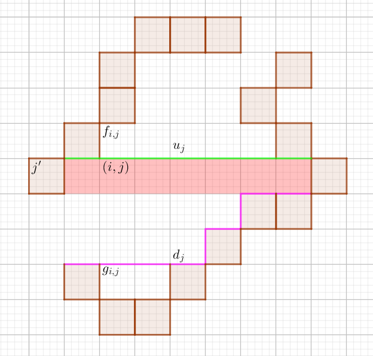
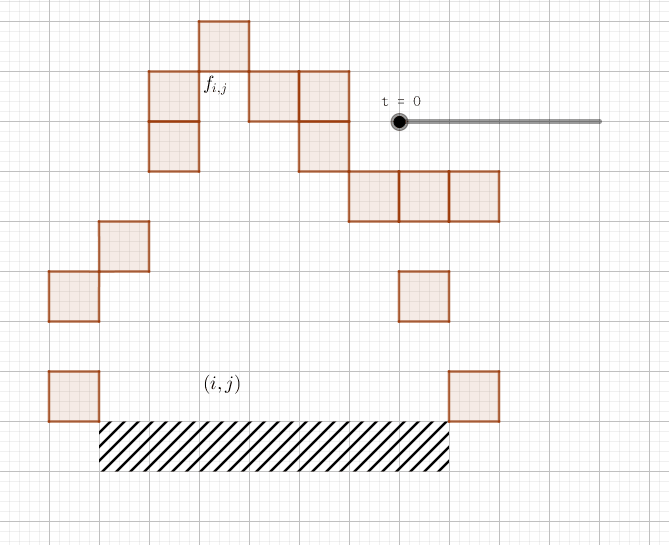

国际象棋是世界上最古老的博弈游戏之一，和中国的围棋、象棋以及日本的将棋同享盛名。
据说国际象棋起源于易经的思想，棋盘是一个 $8 \times 8$ 大小的黑白相间的方阵，对应八八六十四卦，黑白对应阴阳。
而我们的主人公 scx，正是国际象棋的狂热爱好者。作为一个顶尖高手，她已不满足于普通的棋盘与规则，于是她跟她的好朋友 rw 决定将棋盘扩大以适应她们的新规则。
scx 找到了一张由 $n \times n$ 个正方形的格子组成的矩形纸片，每个格子被涂有黑白两种颜色之一。scx 想在这种纸中裁减一部分作为新棋盘，当然，她希望这个棋盘尽可能的大。
不过 scx 还没有决定是找一个正方形的棋盘还是一个矩形的棋盘 (当然，不管哪种，棋盘必须都黑白相间，即相邻的格子不同色)，所以她希望可以找到最大的正方形棋盘面积和最大的矩形棋盘面积，从而决定哪个更好一些。
于是 scx 找到了即将参加全国信息学竞赛的你，你能帮助她么？
第一行包含两个正整数 $n, m$ ($n, m \leq 2000$)，分别表示矩形纸片的长和宽。
接下来的 $n$ 行包含一个 $n \times m$ 的 $0/1$ 矩阵，表示这张矩形纸片的颜色 ($0$ 表示白色，$1$ 表示黑色)。
输出两行，每行包含一个整数。第一行为可以找到的最大正方形棋盘的面积，第二行为可以找到的最大矩形棋盘的面积 (注意正方形和矩形是可以相交或者包含的)。
由于这个黑白相间不好处理，于是可以把横纵坐标之和为奇 (偶) 数的点取个反，然后原来的棋盘就对应为一个同色的正方形 (矩形)了，即 a[i][j] ^= (i ^ j) & 1。
先考虑正方形，可以想到是 DP。记 $f_{i, j}$ 表示以 $i$ 行 $j$ 列为右下角的正方形的最大宽度，则边界状态为 $f_{i, j} = 1$。当 $a_{i, j} = a_{i, j-1} = a_{i-1, j} = a_{i-1, j-1}$ 时，可以进行如下转移：$$ f_{i, j} = \min \{f_{i, j-1}, f_{i-1, j}, f_{i-1, j-1}\} + 1 $$
于是最大正方形的边长就是 $\max\limits_{i, j} f_{i, j}$，接下来考虑矩形：
这道题的矩形部分其实有两种解法——单调栈法和悬线法，先讲悬线法 (下面代码的解法)：
先花 $O(nm)$ 的时间预处理出与 $(i, j)$ 颜色相同，且在列 $j$ 的最上面的点 $f_{i, j}$ 和最下面的点 $g_{i, j}$，如下图：
然后考虑枚举每一行的情况，当颜色相同时 (如下图中的红色部分)，按列更新 $f_{i, j}$ 和 $g_{i, j}$ (即上端点 $u_j = \max \{u_{j-1}, f_{i, j}\}$，下端点 $d_j = \min \{d_{j-1}, g_{i, j}\}$，并更新答案 $(j - j') \cdot (d_j - u_j + 1)$，如下图所示：
若遇到颜色不同的部分，则令 $j' = j - 1$，然后以另一种颜色作为基准颜色 DP。
可以证明，所有的极大矩形都会被更新到，时间复杂度 $O(nm)$。
接下来讲一下单调栈法：
还是对于 $(i, j)$，此时不论它下面是什么，只记 $f_{i, j}$ 为类似地最上面的点，如下图：
我们维护一个单调递增的栈，对于每个 $j$ 的高度 $h_j$ (即 $h_j = i - f_{i, j}$)，若 $h_j$ 比栈顶元素小，也就是说栈顶的高度无法延续下去，于是需要将栈顶弹出，并计算以栈顶高度 $h_{top}$ 为一边的矩形的面积。重复操作直到 $h_j \geq h_{top}$ (或栈空），此时由于新的高度比较大，则直接入栈即可。
类似地，如果该行遇到一个不同色，则像悬线法一样改变基准颜色即可。不过要注意得先计算栈中剩余元素对应的矩形的面积，再把栈清空。
如果没有看懂，最后放一张动图加深理解：
同样，单调栈法也能更新到所有的极大矩形，且复杂度也是 $O(nm)$，故总时间复杂度为 $O(nm)$。
#include <bits/stdc++.h>
#define N 2034
using namespace std;
typedef int mat[N][N];
int r, c, i, j;
mat a, f, g;
inline void up(int &x, const int y) {x < y ? x = y : 0;}
inline void down(int &x, const int y) {x > y ? x = y : 0;}
inline int min(int x, const int y, const int z) {return (x > y ? x = y : x) < z ? x : z;}
void square_dp(){
int i, j, res = 1;
for(j = 1; j <= c; ++j) f[1][j] = 1;
for(i = 2; i <= r; ++i) f[i][1] = 1;
for(i = 2; i <= r; ++i)
for(j = 2; j <= c; j++)
if(a[i][j] == a[i][j - 1] && a[i][j] == a[i - 1][j] && a[i][j] == a[i - 1][j - 1])
up(res, f[i][j] = min(f[i][j - 1], f[i - 1][j], f[i - 1][j - 1]) + 1);
else
f[i][j] = 1;
printf("%d\n", res * res);
}
void rect_dp(){
int i, j, u, d, la, res = 1;
int *U, *D, *A;
for(j = 1; j <= c; ++j){
f[1][j] = g[r][j] = 1;
for(i = 2; i <= r; ++i)
f[i][j] = (a[i][j] == a[i - 1][j] ? f[i - 1][j] + 1 : 1);
for(i = r - 1; i; --i)
g[i][j] = (a[i][j] == a[i + 1][j] ? g[i + 1][j] + 1 : 1);
}
for(i = 1; i <= r; ++i){
U = f[i]; D = g[i]; A = a[i];
la = 0; u = i - U[1]; d = i + D[1] - 1;
up(res, d - u);
for(j = 2; j <= c; ++j){
if(A[j] == A[j - 1]){
up(u, i - U[j]); down(d, i + D[j] - 1);
}else{
la = j - 1; u = i - U[j]; d = i + D[j] - 1;
}
up(res, (d - u) * (j - la));
}
}
printf("%d\n", res);
}
int main(){
scanf("%d%d", &r, &c);
for(i = 1; i <= r; i++)
for(j = 1; j <= c; j++){
scanf("%d", a[i] + j);
a[i][j] ^= (i ^ j) & 1;
}
square_dp();
rect_dp();
return 0;
}
坑1：注意正方形 DP 时不要忘记边界 $f_{i, j} = 1$，矩形的时候类似。
坑2：如果写单调栈，不要忘记切换基准颜色时，要把栈中剩余元素对应的矩形的面积计算出来，再清空栈，以免漏掉答案。